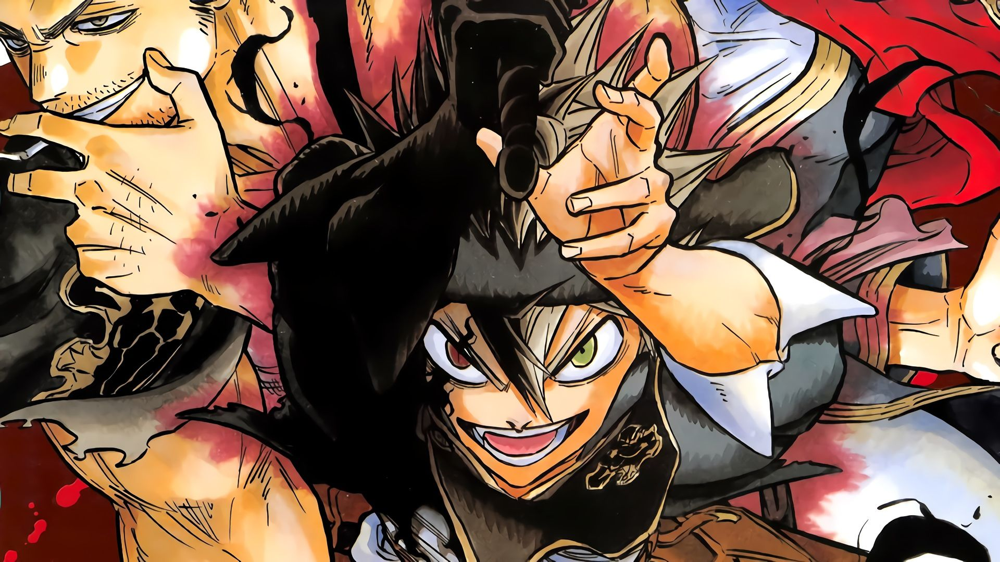

Manga & Anime Favorites
Demon Slayer Naruto Boruto One-Punch Man Pokémon My Hero Academia Free Manga for All!
Log In
Sign Up


My Library
SHONEN JUMP
Action-Adventure
Fantasy
BLACK CLOVER
In a world of magic, Asta, a boy with anti-magic powers, will do whatever it takes to become the Wizard King!
Created by Yūki Tabata |
More About Black Clover

Asta is a young boy who dreams of becoming the greatest mage in the kingdom. Only one problem—he can’t use any magic! Luckily for Asta, he receives the incredibly rare five-leaf clover grimoire that gives him the power of anti-magic. Can someone who can’t use magic really become the Wizard King? One thing’s for sure—Asta will never give up!
Yūki Tabata was born in Fukuoka Prefecture and got his big break in the 2011 Shonen Jump Golden Future Cup with his winning entry, Hungry Joker. He started the magical fantasy series Black Clover in 2015

Follow Series
Manga Trailer